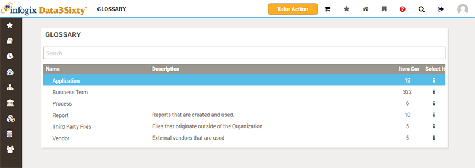
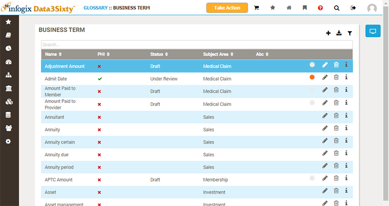
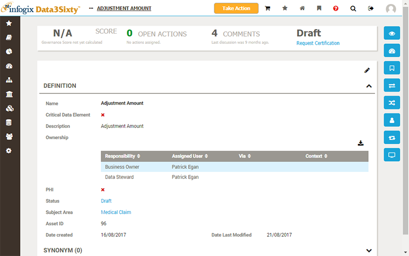

Hover over the Glossary button in the primary navigation to display a menu of the types of artifact available to you:
The types of artifact you can create and track will vary from company to company, so the pop-up menu you see will probably look a little different to the example shown above. However, the following artifact types are very commonly used:
You can click directly on the Glossary button, in the navigation bar, to show a list of all artifact types, together with descriptions of each type, and how many items of each type exist:

Clicking on an artifact type from the Glossary pop-up menu, or from the Glossary page, will list all artifacts of that type:

The list of artifacts shows a number of key attributes displayed in columns. The set of attributes displayed will be customized for your own organization.
Please see the topic Filtering and exporting from tables for full details on how to work with these lists of assets.
Clicking on an artifact will navigate to a screen showing full details for the item:

Please see the topic Inspecting assets for more details on how to use this page to inspect artifacts, models, quality rules and policies.
Next topic: Browsing from the Home page